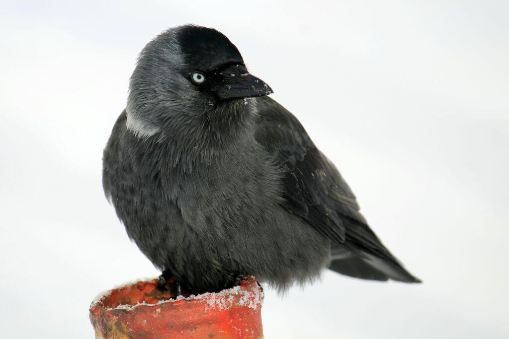

Corvids are a fascinating family of birds. The group contains birds such as crows, rooks, ravens and much more.
 Most birds in this group are scavengers and therefore help clean up our environment, as they eat dead carcasses of animals and dirt. Strong stomach acid helps them burn off any infections or viruses from them, so they do not get sick.
Most corvids have a fondness for shiny things. Magpies (part of the corvid family) often like to steal shiny bits and pieces from people's houses.